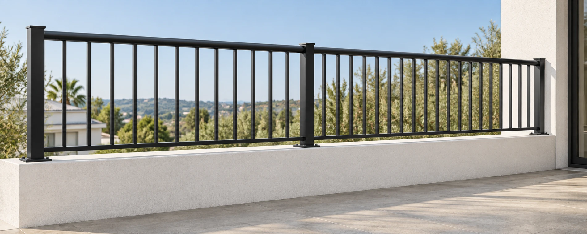
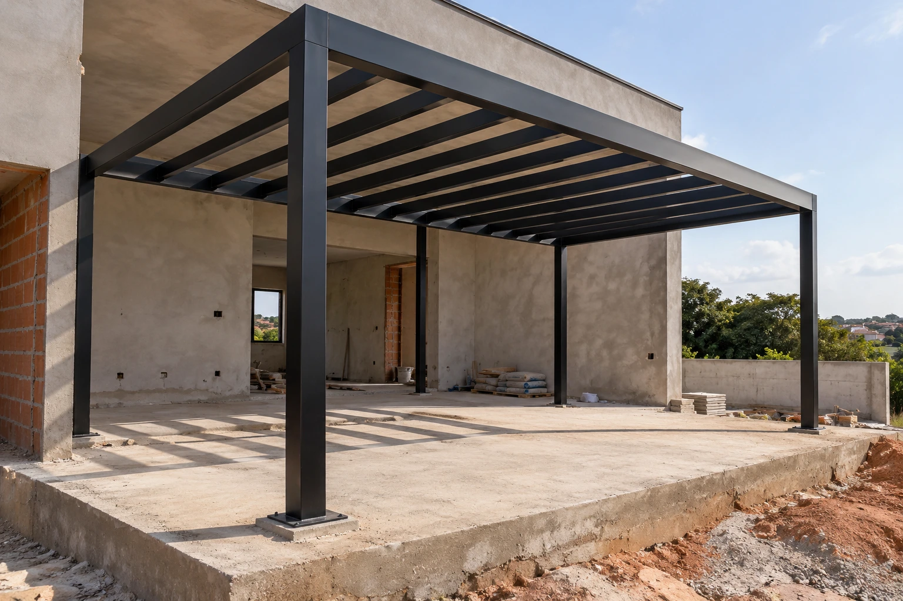
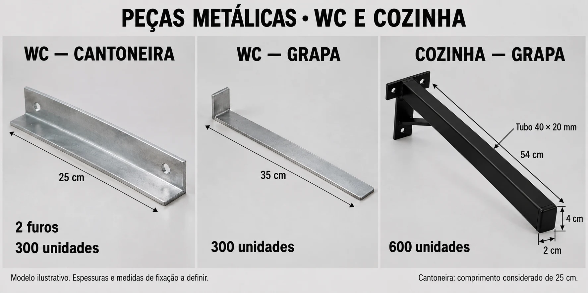

01 / PROTEÇÃO E FECHAMENTOGradis e guarda-corpos
Gradis metálicos prediais, guarda-corpos, grades de proteção e fechamentos sob medida.
Consultar solução ↗
PERGOLADOS SOB MEDIDA ↗Visualização ilustrativaSERRALHERIA • FABRICAÇÃO • INSTALAÇÃO
Estruturas metálicas, serralheria e acabamento sob medida. Da fabricação à instalação, soluções para dar forma ao seu projeto.
01 / A STALPLAT
A Stalplat Estruturas Metálicas atua na fabricação, no fornecimento e na instalação de soluções em serralheria, com peças e estruturas desenvolvidas conforme a necessidade de cada obra.
De gradis prediais a detalhes sob medida, reunimos estrutura, funcionalidade e acabamento para atender construtoras, condomínios, arquitetos, engenheiros, empresas e clientes particulares.
Conheça o atendimento para construtoras ↗02 / O QUE FAZEMOS
Produtos e serviços metálicos para projetos residenciais, prediais e corporativos.

01 / PROTEÇÃO E FECHAMENTOGradis metálicos prediais, guarda-corpos, grades de proteção e fechamentos sob medida.
Consultar solução ↗Portões basculantes, de abrir, portas metálicas e soluções para acessos e áreas de serviço.
Consultar solução ↗Estruturas metálicas, telhados, coberturas, marquises e pergolados conforme o projeto.
Consultar solução ↗Escadas metálicas e corrimãos para compor os acessos e a circulação da edificação.
Consultar solução ↗
05 / DETALHES CONSTRUTIVOSSuportes, grapas, cantoneiras, chapas, sapatas e suportes para bicicletários.
Consultar solução ↗Envie o desenho, as medidas ou as fotos do local para nossa equipe comercial.
Conversar sobre meu projeto ↗03 / APRESENTAÇÃO VISUAL
Uma visão das soluções que podem fazer parte do seu próximo projeto.
FABRICAÇÃO SOB MEDIDA
Suportes para bancadas, grapas, cantoneiras e peças de fixação. Cada item deve ter suas medidas, espessuras e aplicação definidas para o projeto.
Abrir apresentação de peças ↗As imagens desta apresentação são visualizações ilustrativas e não representam comprovação de obras executadas.
04 / RELACIONAMENTO CORPORATIVO
Atendimento para equipes de suprimentos, engenharia e obras. Apresente sua demanda e solicite uma proposta comercial com escopo definido.
Enviar uma solicitação ↗Envie o projeto, memorial, quantitativos, medidas ou fotos, junto ao local da obra.
Defina materiais, acabamento, fabricação, fornecimento e instalação necessários.
Valores, condições comerciais e prazo são apresentados de acordo com o serviço solicitado.
05 / VAMOS CONSTRUIR
Fale diretamente com nossa equipe comercial.